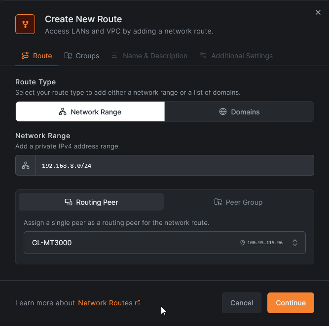
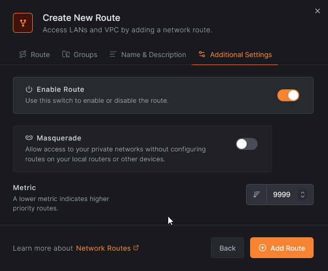
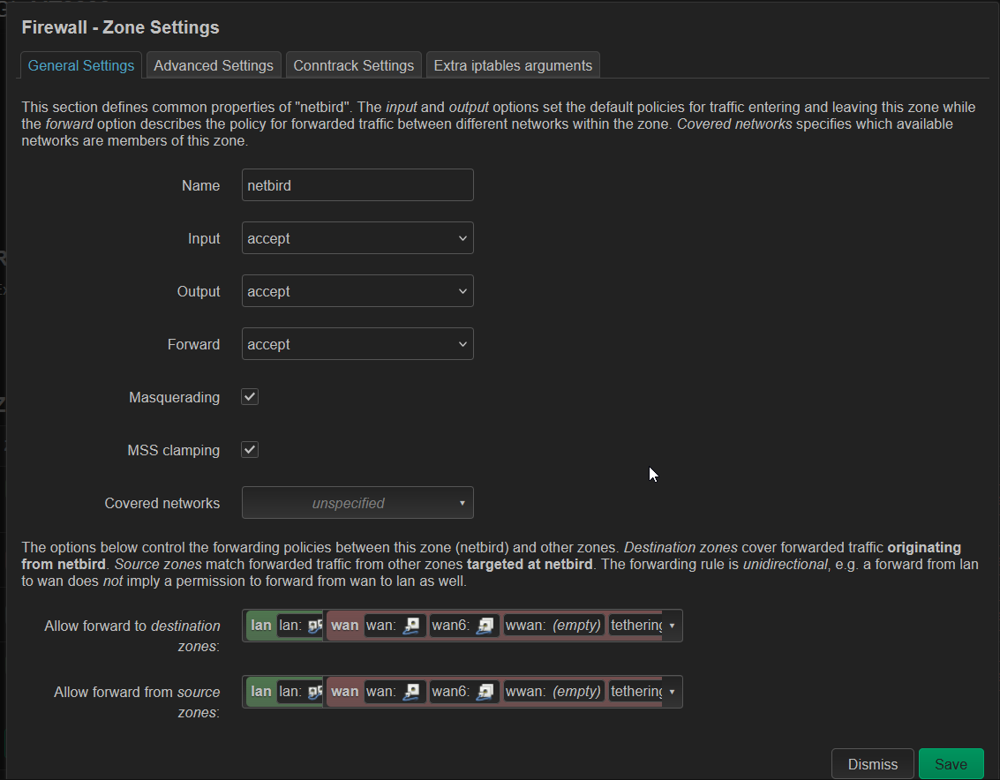
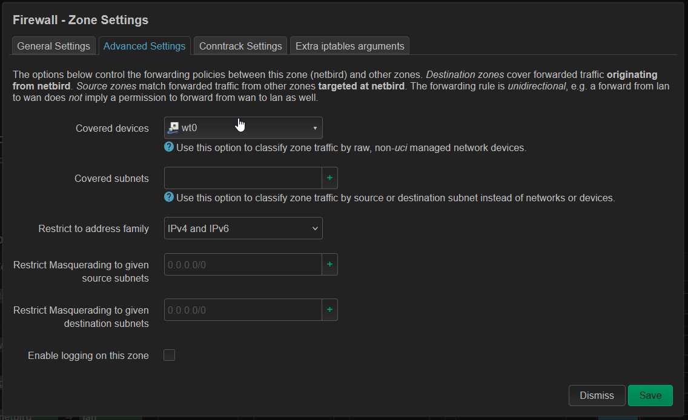
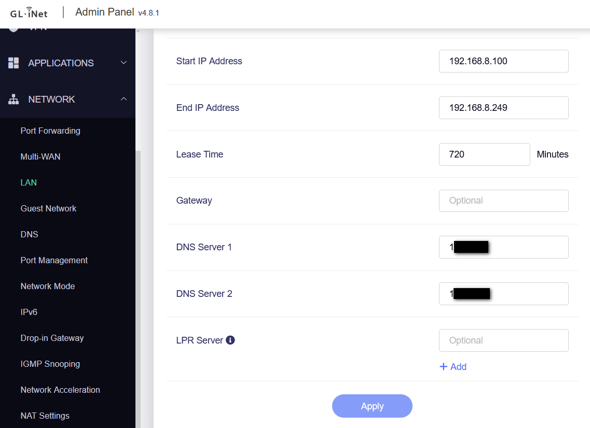
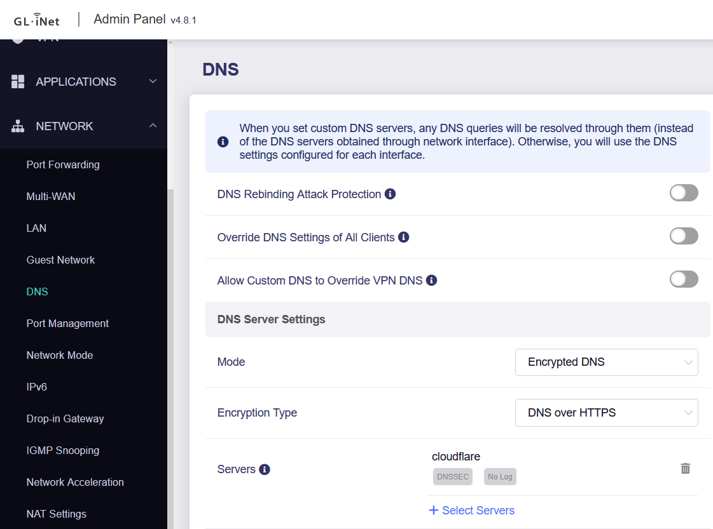

Netbird VPN Deployment
This guide covers the deployment of a self-hosted Netbird management server within a Proxmox LXC container, configuring automatic updates, and connecting a GL.iNet MT-3000 travel router as a client.
Infrastructure Note
For security purposes, the Netbird server is hosted on a Debian 12 LXC container placed in a separate VLAN (DMZ), as this container will be directly exposed to the internet.
Part 1: Netbird Server Installation
1. Prerequisites
Before installing Netbird, ensure you have deployed a fresh Debian 12 container and configured the necessary port forwarding on your firewall.
Port Forwarding Requirements:
| Protocol | Ports | Purpose |
|---|---|---|
| TCP | 80, 443 | HTTP/HTTPS (Let's Encrypt & Web UI) |
| TCP | 33073, 10000, 33080 | Netbird Management & Signal |
| UDP | 3478, 49152-65535 | Coturn (STUN/TURN) & WireGuard |
2. Install Required Packages
Update your system and install the base dependencies:
3. Install Docker Engine
Netbird and its dependencies (like Zitadel) run in Docker. Install Docker using the official repository:
# Add Docker's official GPG key:
sudo apt-get update
sudo apt-get install ca-certificates curl
sudo install -m 0755 -d /etc/apt/keyrings
sudo curl -fsSL https://download.docker.com/linux/debian/gpg -o /etc/apt/keyrings/docker.asc
sudo chmod a+r /etc/apt/keyrings/docker.asc
# Add the repository to Apt sources:
echo \
"deb [arch=$(dpkg --print-architecture) signed-by=/etc/apt/keyrings/docker.asc] https://download.docker.com/linux/debian \
$(. /etc/os-release && echo "$VERSION_CODENAME") stable" | \
sudo tee /etc/apt/sources.list.d/docker.list > /dev/null
# Install Docker components:
sudo apt-get update
sudo apt-get install docker-ce docker-ce-cli containerd.io docker-buildx-plugin docker-compose-plugin -y
4. Run the Netbird Installation Script
DNS Requirement
Before running the script below, you must configure your domain's DNS records to point to your public IP address. The script relies on this to automatically generate SSL certificates.
Replace <YOUR_DOMAIN_NAME> with your actual domain and execute the setup script:
export NETBIRD_DOMAIN=<YOUR_DOMAIN_NAME>
curl -fsSL https://github.com/netbirdio/netbird/releases/latest/download/getting-started-with-zitadel.sh | bash
Part 2: Automatic Netbird Updates
To keep the Netbird infrastructure secure and up to date, we will configure a cron job to run an automated update script.
- Navigate to your user's home directory:
- Download the update script:
- Open the downloaded script in a text editor and update the file paths to match your Netbird installation directory.
- Make the script executable:
- Add the script to your crontab. Open the cron editor using
crontab -eand add the following line to run the update every Saturday at 8:00 AM (replace<USERNAME>with your actual username):
Script Source
This script is sourced from the AdminAkademia GitHub Repository.
Part 3: GL.iNet MT-3000 Client Setup
Follow these steps to install and route traffic through Netbird on a GL.iNet MT-3000 (OpenWrt) router.
1. Install and Start the Netbird Client
Connect to your router via SSH and run the following commands:
2. Authenticate the Router
Log the router into your Netbird network using a setup key generated from your Netbird dashboard:
3. Configure Route
Log into the Netbird interface to add a new route for the GL.iNet:


4. Configure the Firewall Zone (LuCI)
Navigate to the advanced LuCI interface to add new firewall zone:


5. DNS Configuration (Optional)
If you want to use local DNS over the Netbird tunnel:
- Set your local DNS nameservers in the DHCP settings.

- Use a public DNS provider as your upstream DNS to reliably resolve your Netbird server's public domain name.
